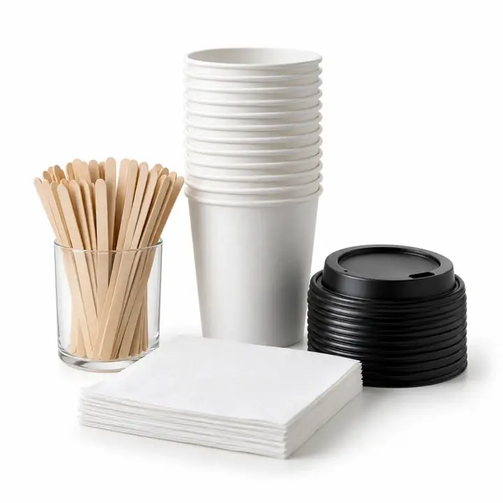

Marley Coffee · Empresas · Oficinas
¿Café para oficinas?
¿Cómo organizar estaciones de café para oficinas?
Calcula usuarios por zona y organiza autoservicio, limpieza y reposición.
Arma tu propuestaTu oferta · Oficinas
¿Qué pack de partida puedes revisar?
Café a tu ritmo: el equipo se sirve cuando quiere y la reposición llega antes de que se acabe. La máquina Marley se presta en comodato.
Ver máquina, productos y precios

Oficina
Superautomática con pantalla
40 a 150 tazas al día
En comodato: Marley presta la máquina y tú compras los insumos. Modelo, mínimo mensual y condiciones a confirmar con tu ejecutivo.
Productos del pack
 Café en grano orgánico8 × 907 g$447.920 neto
Café en grano orgánico8 × 907 g$447.920 neto Leche20 × 500 g$185.000 neto
Leche20 × 500 g$185.000 neto
Azúcar y stevia en sobresFormato a confirmar$58.000 neto- Revolvedores y servilletasFormato a confirmar$32.000 neto
- Vaso 6,5 + tapa500 de cada uno$67.000 neto
Referencia: la cotización completa de Marley del 19-oct-2026, con todas las líneas, suma $1.491.220 neto con kit y filtro.
Condiciones a confirmar
- Compra mínima mensual: a confirmar.
- Plazo de entrega: a confirmar.
- Compatibilidad de insumos con la máquina: a confirmar.
Precios netos referenciales de la cotización de Marley del 19-oct-2026. Los confirma tu ejecutivo.
¿Cómo evalúas y comparas una solución para oficinas?
Identifica zonas de uso, modalidad de servicio y consumo observado. Compara usuarios, servicio y tareas de operación por cada zona.
Ver el método de evaluación
Ver los pasos de evaluación
- Identifica las zonas: Anota cuántas personas usan cada punto de café y en qué momentos.
- Define el servicio: Compara atención por una persona y autoservicio; revisa espacio, conexiones y tareas de limpieza.
- Planifica reposición: Calcula consumo con tus registros y confirma con el proveedor plazos y disponibilidad.
Compatibilidad, disponibilidad, servicios, soporte y condiciones comerciales se confirman para cada operación en una propuesta.
Ver los puntos de comparación
| Usuarios | Personas por zona y horarios de mayor uso. |
|---|---|
| Servicio | Autoservicio o atención; bebidas que se preparan. |
| Operación | Espacio, limpieza, insumos y reposición. |
¿Qué preguntas conviene resolver antes de elegir?
Confirma cuántos puntos de servicio hacen falta y qué cubre el comodato.
Ver preguntas y guías relacionadas
Ver preguntas y respuestas frecuentes
¿Qué cafetera conviene para una oficina pequeña?
Evalúa usuarios, consumo en hora punta, espacio y bebidas, además de quién se hace cargo de la limpieza.
¿Cuántas máquinas necesita una oficina?
Depende de la distribución y los tiempos de espera observados; no hay una proporción universal.
¿Qué incluye el comodato de una máquina para oficina?
El comodato legal es un préstamo gratuito de uso. Productos y servicios adicionales deben constar por separado en la propuesta.